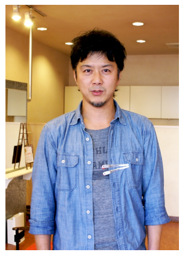
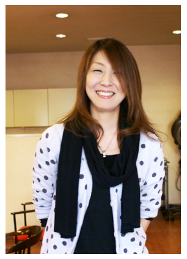

サロン
美容室RED
- 所在地
- 〒680-0845鳥取市富安１丁目２１３西尾ビル1F（扇町ドコモさんの道を挟んで横です）
- お問い合せ
- 0857-20-2221
- 予約受付時間
-
平 日
10：00～19：00（カット）
18：00（パーマ・カラー）
土・日・祝
09：00～18：00（カット）
17：00（パーマ・カラー） - 定休日
- 月曜・第1火曜・第3日曜
お盆、お正月はお問合わせ下さい - 駐車場
- 5台程あります
Google Map
スタイリスト
戸板 大生 Toita Hiroki

30年のベテランです。
スタイリング剤に極力頼らないカットで通しています。まずカットは、骨格から考えるべきと思っています。ヘア雑誌の「丸顔のあなたは○×、細顔のあなたは△△」なんてあてにならないと思い続けてカットしています。
だからこそ自宅での再現が樂にできるのです。以前は外資系メーカーの社外講師、地域での女性専門ステップアップセミナー(ヘアーの部)なども歴任していました。
少し毒舌気味なのが…
木下 貴子 Kinoshita Atsuko

この仕事に従事してすでに20年近く、今までに何万人ものお客様をカットしてきました。
カウンセリングを徹底的に行い、好みを聞き入れ、そしてスタイルを提案します。
若い頃の大阪での職歴がものをいい、幅広い対応ができます。厳しい突っ込みも、さらりといなします。br
着付けも得意としております。